Acesse e resolva
Diagnostique e realize intervenções a distância, reduzindo deslocamentos.
Centralize acesso remoto, monitoramento, backup e chamados. Dê à sua equipe mais recursos para agir antes que os problemas parem seus clientes.
7 dias grátis · Sem cartão · Suporte em português
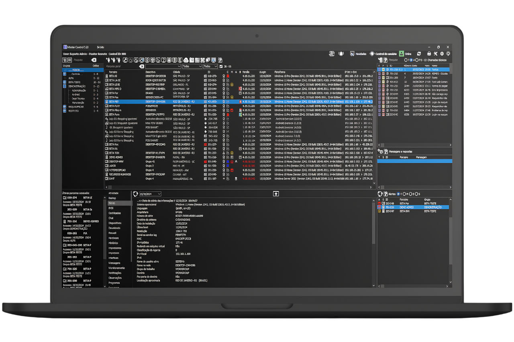
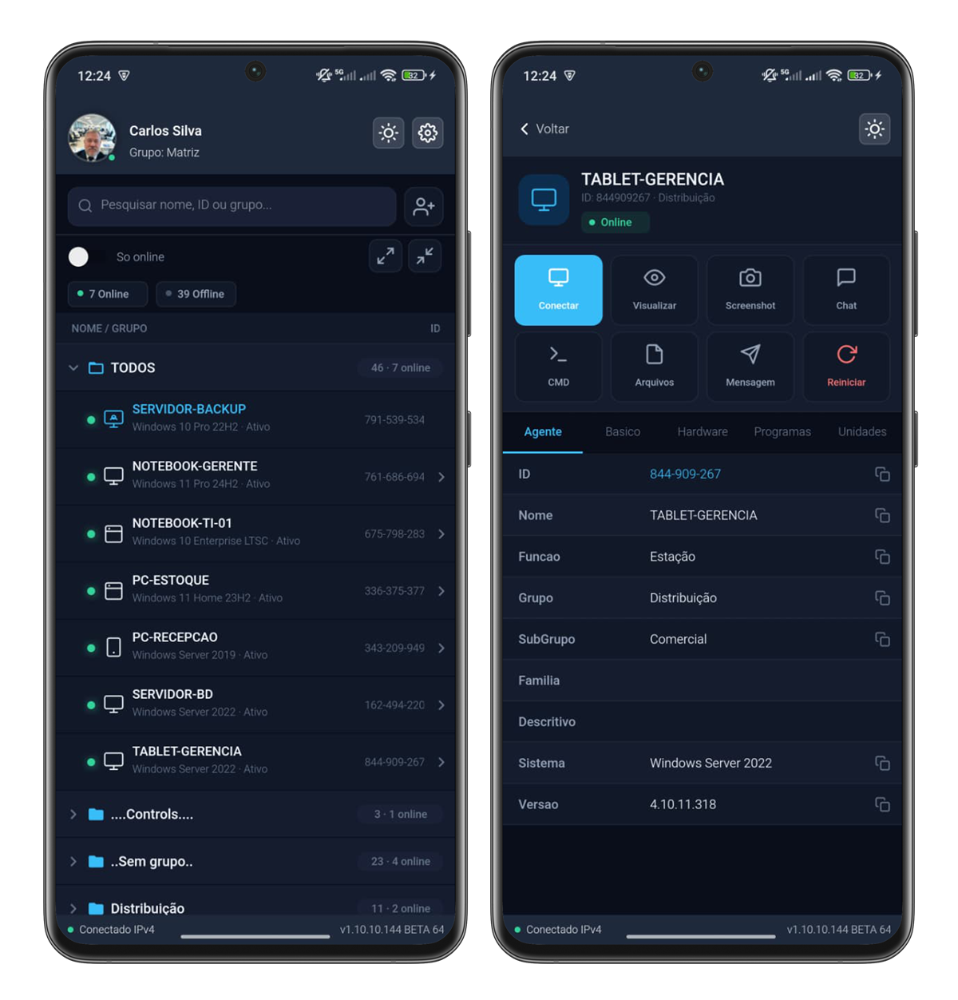
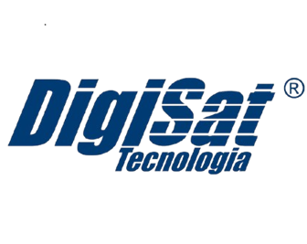
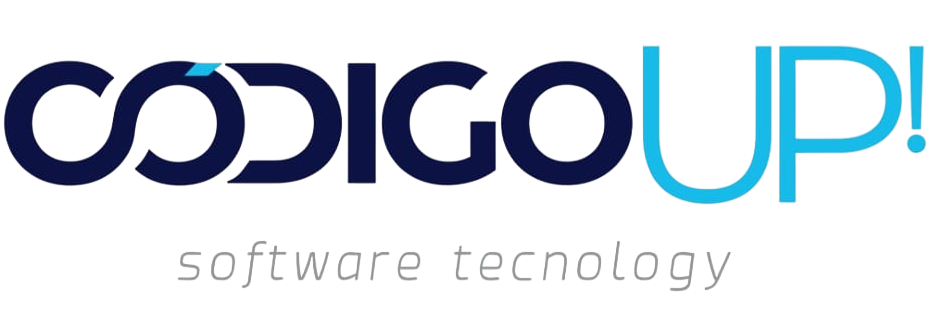
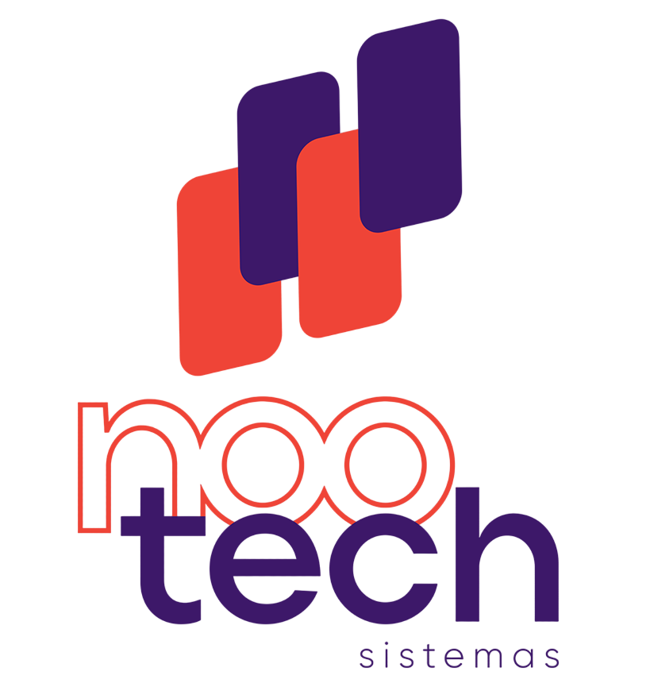
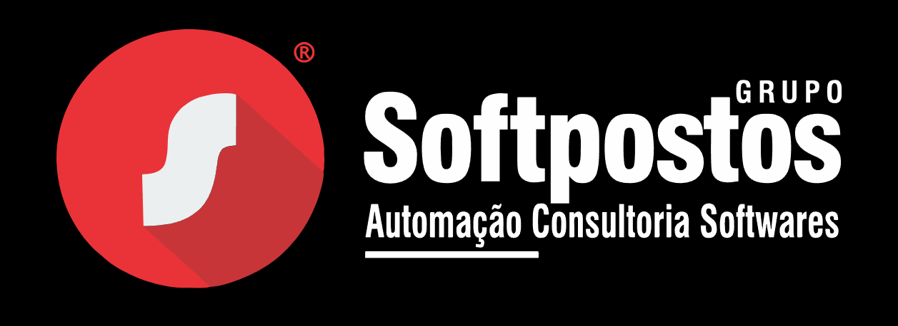
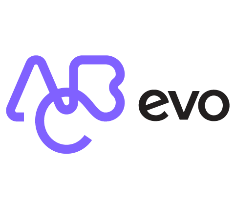
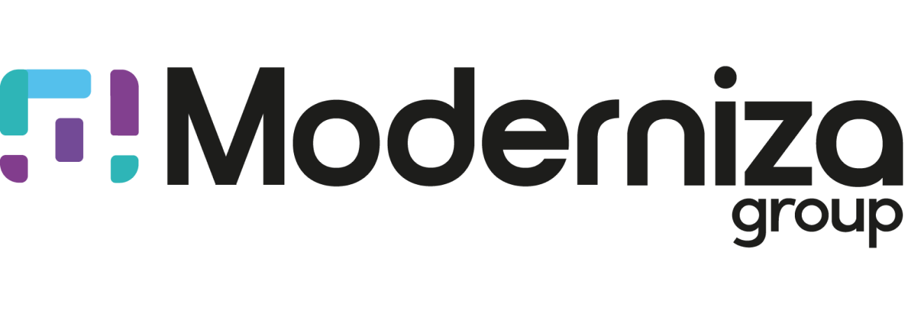
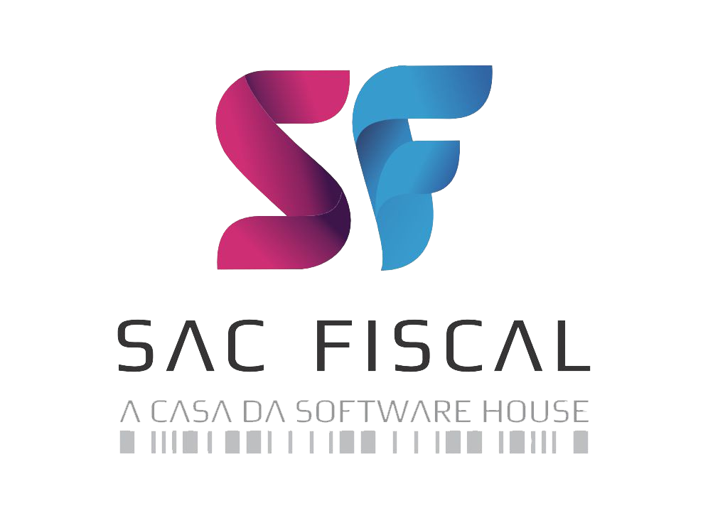
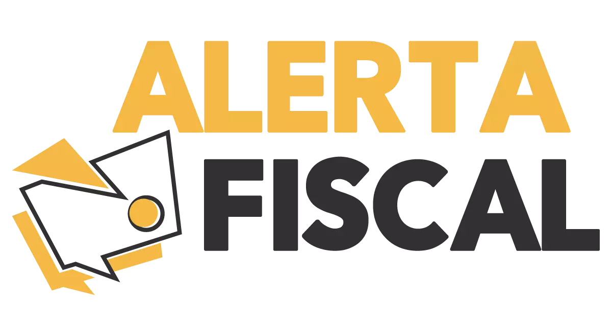
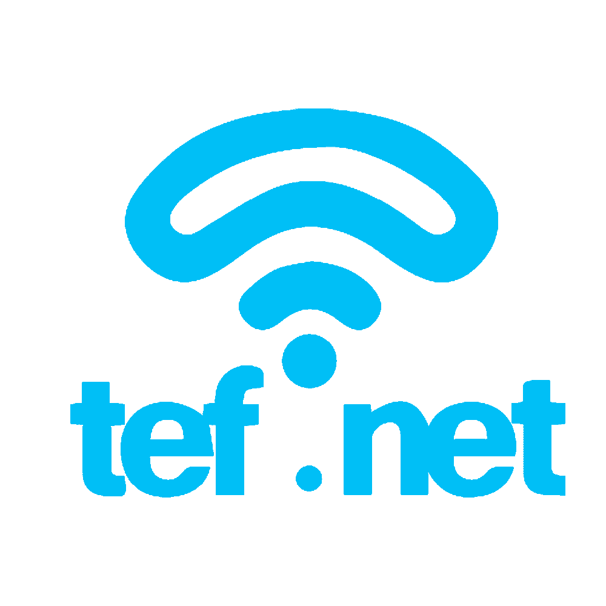
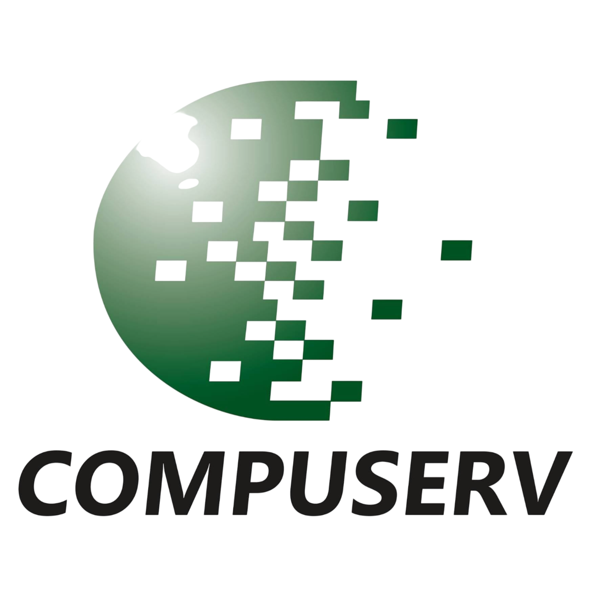
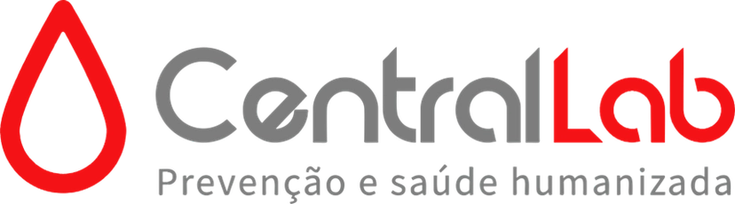
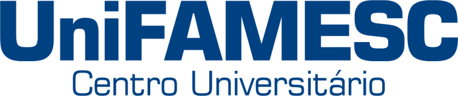
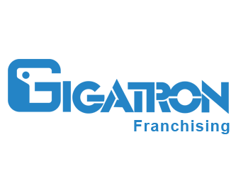
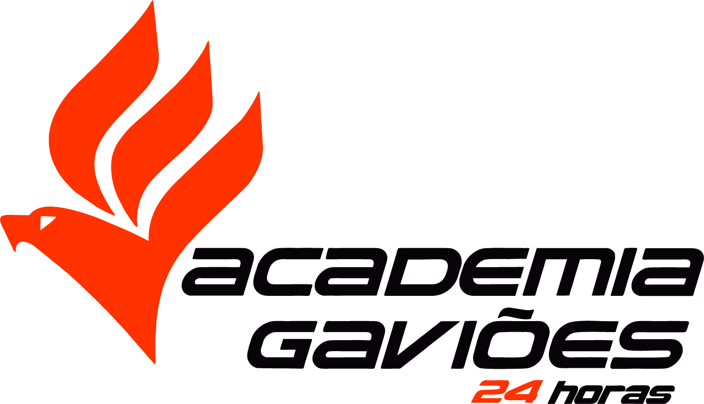
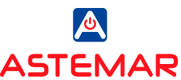
Um cliente relata lentidão. Outro precisa de atendimento urgente. Sua equipe alterna entre ferramentas, procura informações e repete tarefas.
Enquanto isso, o trabalho preventivo fica para depois.
Com a Master Remote, acesso, informações e rotinas ficam no mesmo ambiente. Sua equipe ganha condições para atender com mais agilidade e menos improviso.
Diagnostique e realize intervenções a distância, reduzindo deslocamentos.
Acompanhe indicadores e alertas para investigar o que exige atenção.
Reúna demandas, informações e rotinas para aproveitar melhor o tempo da equipe.
7 ferramentas integradas.
Mais de 170 funcionalidades.
Um só centro de comando.
Atenda seus clientes e realize intervenções a distância com diferentes modalidades de conexão.
Programe cópias de segurança e acompanhe sua execução, reduzindo rotinas manuais.
Acompanhe hardware, backups e certificados para identificar situações que precisam de atenção.
Consulte informações de hardware e software para apoiar diagnósticos e decisões.
Organize demandas e automatize etapas do atendimento para reduzir tarefas repetitivas.
Mantenha a comunicação com seus clientes integrada à rotina de suporte.
Acompanhe registros dos atendimentos e tenha informações para apoiar a gestão.
A disponibilidade dos recursos varia conforme o plano e os módulos contratados.
Use monitoramento, backup e informações centralizadas para estruturar um atendimento mais preventivo e ampliar os serviços oferecidos aos seus clientes.
Teste Grátis por 7 DiasComplemente contratos com serviços de backup e monitoramento.
Use registros e relatórios para dar visibilidade ao atendimento realizado.
Ofereça acompanhamento contínuo e mais atenção aos ambientes dos clientes.
Recursos para apoiar o cuidado com os ambientes e as informações dos seus clientes.
Compartilhe como sua equipe trabalha e quais são suas principais necessidades.
Veja os recursos em uma demonstração e tire suas dúvidas com nossa equipe.
Experimente gratuitamente, com suporte durante o teste.
Para empresas de suporte de TI, software houses e equipes internas que precisam acessar, acompanhar e gerenciar dispositivos remotamente.
São 7 dias para experimentar as funcionalidades e avaliar como elas se aplicam à sua operação.
Não. O teste gratuito não exige cartão de crédito.
Sim. A equipe oferece suporte para ajudar na configuração e na avaliação dos recursos.
Além do acesso remoto, a solução reúne backup, monitoramento, inventário, automação, chamados, mensageria e relatórios, conforme o plano contratado.
Conheça a Master Remote e descubra quais recursos fazem sentido para sua operação.
Crie seu acesso no site da Master Remote e experimente o plano Profissional por 7 dias.
Quero fazer um teste gratuito →Sem cartão de crédito. Suporte durante o teste.